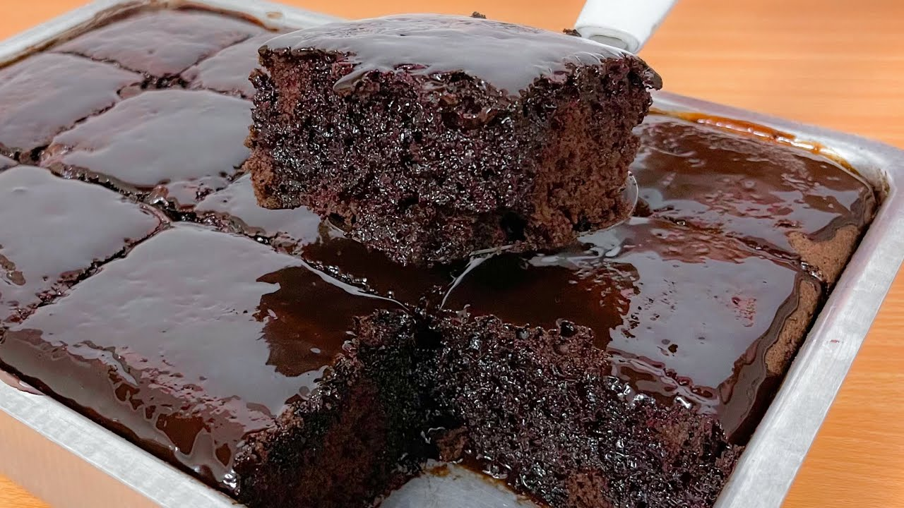

Bolo De Chocolate
- 3 ovos
- 1 e meia xícara de chá de açúcar
- Meia xícara de chá de óleo
- 1 xícara de chá de chocolate em pó
- 2 xícaras de chá de farinha de trigo
Em um liquidificador adicione os ovos, o chocolate em pó, a manteiga, a farinha de trigo, o açúcar e o leite, depois bata por 5 minutos. Adicione o fermento e misture com uma espátula delicadamente. Em uma forma untada, despeje a massa e asse em forno médio (180 ºC) preaquecido por cerca de 40 minutos. Não se esqueça de usar uma forma alta para essa receita: .

Cuzcuz Paulista
- Farinha de milho
- Milho em conserva 1 lata
- Sardinha 2 latas
- Caldo de Legumes 1 tablete
- Azeitona verde 50 gramas
Refogue no azeite, a cebola, o pimentão, as azeitonas, a ervilha, o milho verde, o molho de tomate, o cheiro-verde, a sardinha, os temperos e o tablete de caldo . Coloque a água, deixe ferver, coloque a farinha de milho e cozinhe. Unte a forma com azeite, e coloque os ovos, os tomates e a sardinha por baixo. Coloque a massa na forma, deixe esfriar e desenforme.
Risoto De Camarão
- 300 g de camarão
- 1 pitada de pimenta-do-reino
- raspas da casca de 1 limão
- 1 colher (sopa) de azeite
- Caldo de Legumes 1 tablete
- 2 sticks de MAGGI